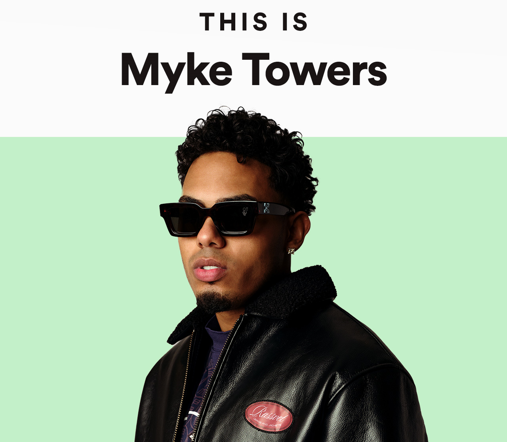

Álbumes

¡Regístrate!
|

Álbumes |
¡Regístrate! |

|
Myke TowersEl joven fenómeno de la música urbana, el rapero y compositor Myke Towers, se ha ganado un lugar de respeto y reconocimiento en uno de los mercados más competitivos de la música. Su audacia para escribir canciones, acompañadas de su voz profunda y un talento en escena que hipnotiza a sus fanáticos, le ha hecho merecedor del respeto y reconocimiento en la competitiva industria urbana. El puertorriqueño ha colaborado recientemente con algunos de los nombres más importantes del género, como Bad Bunny, Becky G, Farruko, Piso 21, Sech y Arcángel, y rápidamente se ha vuelto uno de los artistas más buscados dentro de la nueva generación urbana. |